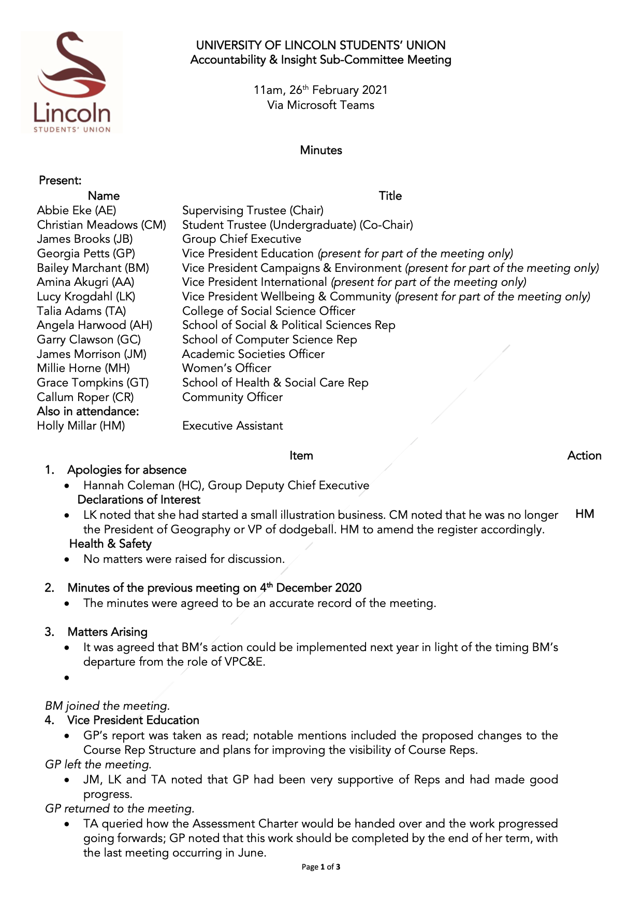
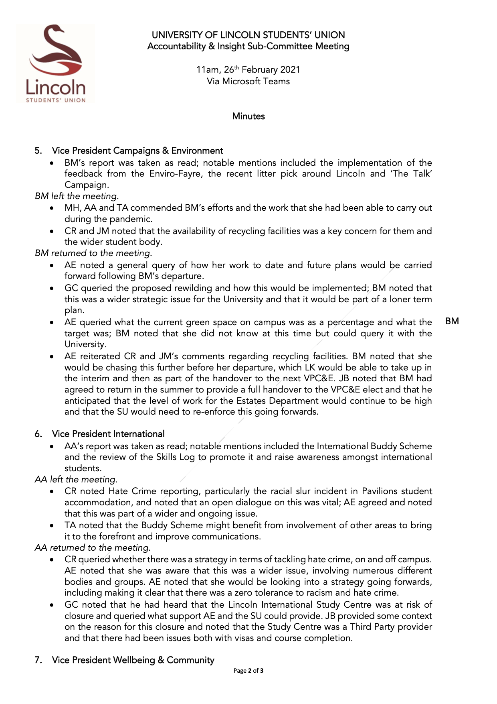

By Garry Clawson
March 03, 2021
As a School Rep I have the opportunity upon invite to attend wider Student Union meetings. These meetings are not directly related to the School of Computer Science but they are related to ensuring that the Student Union Leadership Team is being effective and to hold them to account. These meetings are called 'SU Accountability and Insight Committees'.
These meetings are different in that they are there to measure and discuss how the Student Leaders are performing against their Key Performance Indicators (KPI's). These are the KPIs that they committed to during their election campaigns and work towards for the benefit of all UoL students. A crucial difference of these meetings is that they are chaired by a Supervising Trustee Chair, and an Undergraduate Student Trustee, all of whom can be found here. They also include the SU Group Chief executive, James Brooks as well as a wider variety of SU support staff that go to ensuring that the Student leaders can fulfill their duties.
The meeting is formal, with a clear agenda and minutes being taken. They provide a chance for volunteer students (school reps like me for example), to ask questions and probe the student leaders regarding actions, progress to date, roadblocks, new ideas and so on. To aid this process the student leaders provide a report that is available before hand. For interest the previous Student Leader report can be found here. These minutes also include details such as declarations of interests (i.e. if you own a property business that may be used by students or if you own any shares in linked business that may impact impartiality).
These reviews take place every 3 months and supposed to be fair but challenging. One thing that did surprise me, was that once a student leader reports on their progress, they are then asked to leave the meeting (go to a virtual lobby), while the meeting participants discuss their report and collate questions and feedback. Questions are then either posed by the chair or by the participant themselves. This was a great way to provide healthy debate as well as a clear period of time to review success or areas to improve. Now, it is important to note this is not an appraisal of the student leader but a report on the progress of the areas that they own and a way to formally report what has taken place. With that in mind these meetings tend to be positive but do allow the space for concerns to be raised and the SU to update or change direction.
There was a lot said during this meeting and for your interest and awareness I have released the meeting minutes below so you can see exactly what was discussed and what your student leaders (and volunteer leaders) are asking on your behalf. These are great chances to see the SU process all the way though the SU structure and if you do ever get the chance to participate then I would highly recommend it!
 
Remember, we are here to help. If you are not having the experience you want then please reach out and let us know. You can contact any one of us through our email links or anonymously using our Feedback page. All emails are received in the strictest of confidence. No concern or idea is too small.